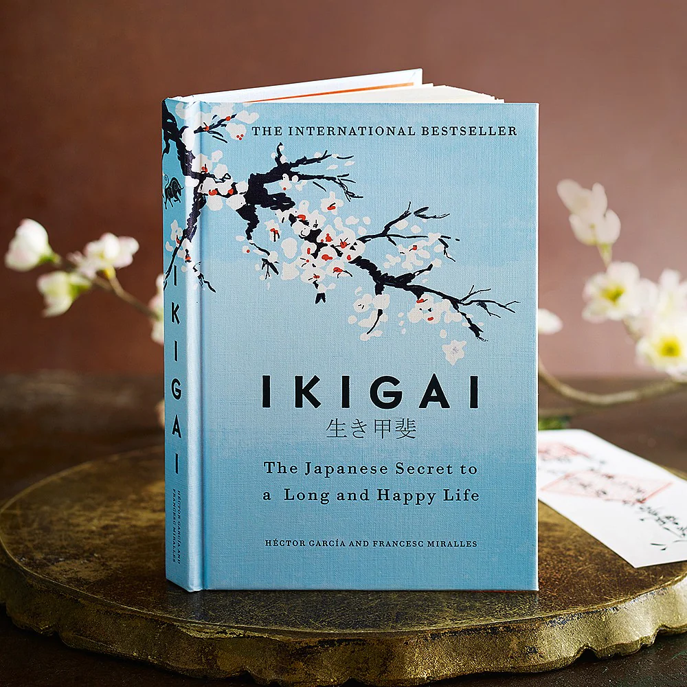
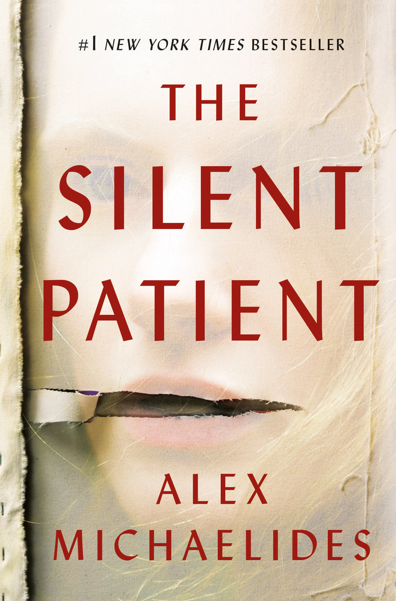
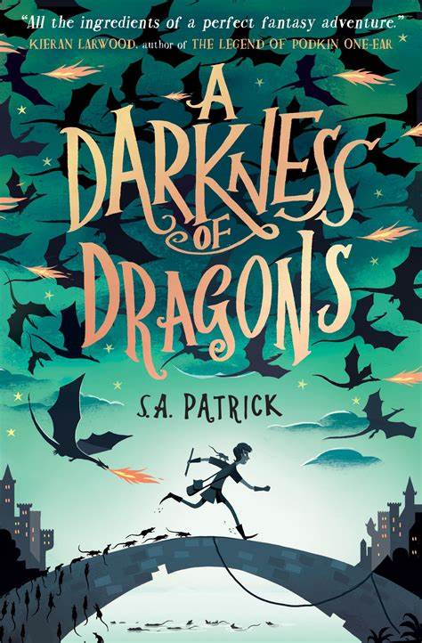

Reading is a conversation. All books talk. But a good book listen as well.
-Mark Haddon
It Ends With Us
Colleen Hoover
It Ends with Us is a book that follows a girl named Lily who has just moved and is ready to start her life after college. Lily then meets a guy named Ryle and she falls for him. As she is developing feelings for Ryle, Atlas, her first love, reappears and challenges the relationship between Lily and Ryle.

Ikigai
Hector Garcia
Ikigai translates as `a reason to live' or `a reason to jump out of bed in the morning'. There, finding your
ikigai is considered the key to longevity - and to happiness.'Ikigai gently
unlocks simple secrets we can all use to live long, meaningful, happy lives.
The Book Thief
Markus Zusak
It is 1939. Nazi Germany. By her brother's graveside, Liesel's life is changed forever when she picks up a
single object, abandoned in the snow. It is The Gravedigger's Handbook. So begins Liesel's love affair with
books and words. But when Liesel's foster family hides a Jew in their basement, nothing will ever be the
same again.
The Alchemist
Paulo Coelo
A novel rich in metaphors and symbolism, The Alchemist is a story based on the adventures of a young shepherd
boy, who, upon deciding to follow his prophetic dreams, sets on a treasure hunt. This journey introduces him
to some remarkable people who leave an indelible and profound mark on him.

The Silent Patient
Alex Michaelides
The Silent Patient is a shocking psychological thriller of a woman’s act of violence against her husband—and
of the therapist obsessed with uncovering her motive

A Darkness Of Dragon
S A Patrik
In a world of dragons, song spells and battles, Patch Brightwater is a boy in disgrace. Thrown in jail for
playing a forbidden spell, he is no one's idea of a hero. But then he discovers that the evil Piper of
Hamelyn is on the loose. With the help of his friends Wren and Barver, Patch must stop the Piper sparking
the biggest battle of them all...